かんたんスタートガイド
「かんたんスタートガイド」では、BinReaderの基本操作をすばやく習得していただくために、かんたんな例題を通して、具体的な操作手順を紹介します。「フォーマット定義」から「ソースコード生成」まで、一連の操作の流れを習得することができます。
※試用版では、一部の機能がご利用になれませんので、ご注意ください。
■例題■
以下のファイルフォーマットを例に操作手順を紹介します。
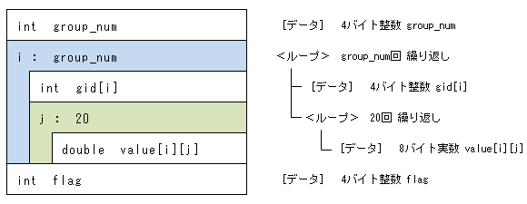
1. BinReaderの起動
- Br.exeをダブルクリックして、BinReaderを起動します。
最初に、[プログラミング言語の選択]ダイアログが表示されます。
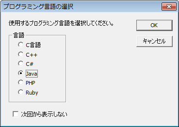
- 使用するプログラミング言語を選択します。
- [OK]ボタンをクリックします。
BinReaderの操作画面が表示されます。
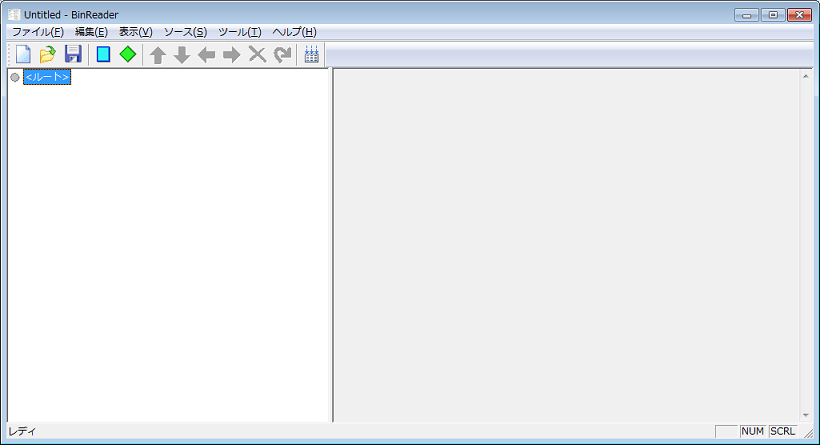
注意
試用版では、[ライセンスキーの登録]ダイアログや機能制限のメッセージも表示されます。
2. 画面構成の確認
- 操作画面は、以下のような構成になっているので確認します。
左側の[フォーマットビュー]上でフォーマットを定義すると、右側の[ソースコードビュー]に自動生成されたソースコードが表示されます。
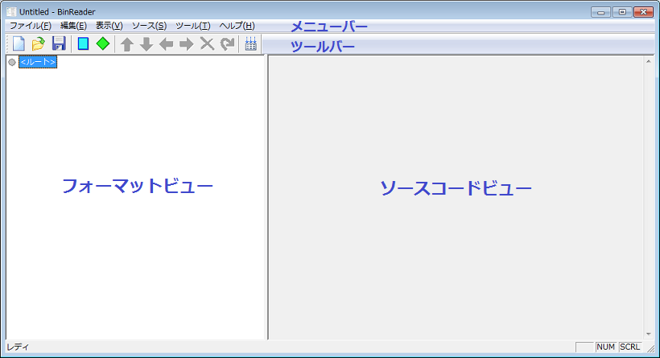
3. データ "int group_num" の追加
- ＜ルート＞をクリックして をクリックするか、＜ルート＞上で右クリックして[データを追加]を選択します。
[データの追加]ダイアログが表示されます。
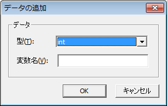
- [型]リストから、intを選択します。
- [変数名]ボックスに、group_numと入力します。
- [OK]ボタンをクリックします。
[フォーマットビュー]に、データ "int group_num" が追加され、さらに、[ソースコードビュー]にソースコードが自動生成されます。
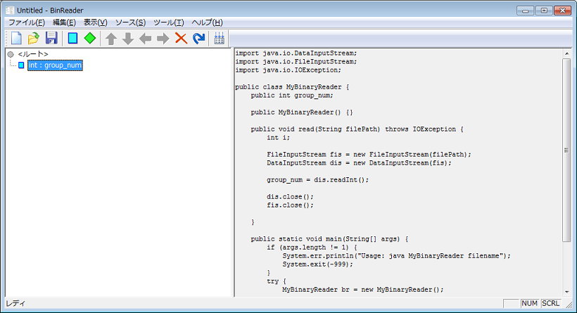
4. ループ "i : group_num" の追加
- データ "int group_num" が選択状態のまま をクリックするか、"int group_num" 上で右クリックして[ループを追加]を選択します。
[ループの追加]ダイアログが表示されます。
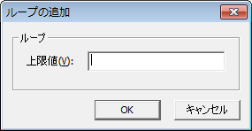
- [上限値]ボックスに、group_numと入力します。
- [OK]ボタンをクリックします。
[フォーマットビュー]に、ループ "i : group_num" が追加され、[ソースコードビュー]も自動更新されます。
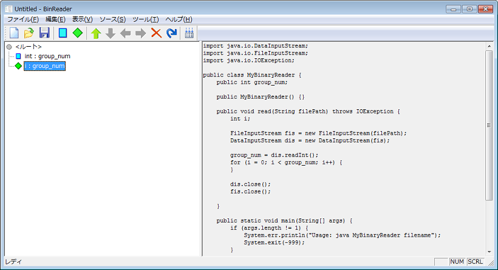
注意
[上限値]ボックスに指定した値のチェックは行われませんのでご注意ください。
5. データ "int gid[i]" の追加
- ループ "i : group_num" が選択状態のまま をクリックするか、"i : group_num" 上で右クリックして[データを追加]を選択します。
[データの追加]ダイアログが表示されます。
- [型]リストから、intを選択します。
- [変数名]ボックスに、gidと入力します。
- [OK]ボタンをクリックします。
[フォーマットビュー]のループ "i : group_num" 配下に、データ "int gid[i]" が追加され、さらに、[ソースコードビュー]も自動更新されます。
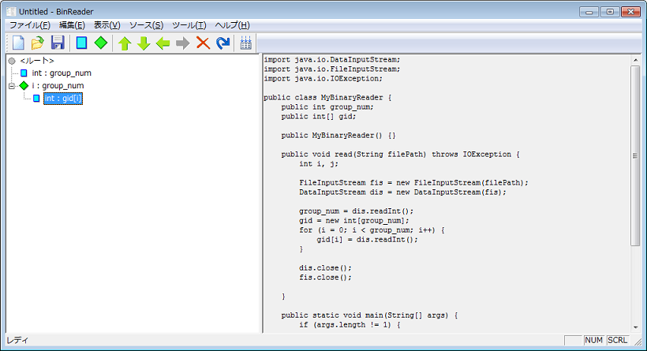
6. ループ "j : 20" の追加
- データ "int gid[i]" が選択状態のまま をクリックするか、 "int gid[i]" 上で右クリックして[ループを追加]を選択します。
[ループの追加]ダイアログが表示されます。
- [上限値]ボックスに、20と入力します。
- [OK]ボタンをクリックします。
[フォーマットビュー]のループ "i : group_num" 配下に、ループ "j : 20" が追加され、[ソースコードビュー]も自動更新されます。
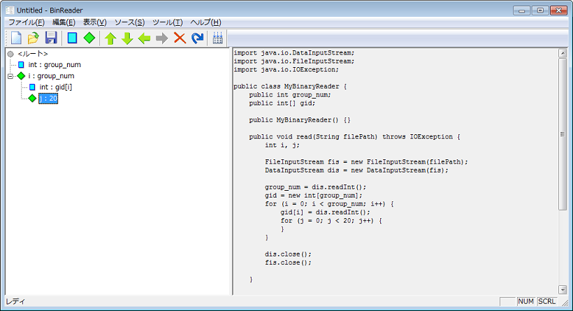
注意
[上限値]ボックスに指定した値のチェックは行われませんのでご注意ください。
7. データ "double value[i][j]" の追加
- ループ "j : 20" が選択状態のまま をクリックするか、"j : 20" 上で右クリックして[データを追加]を選択します。
[データの追加]ダイアログが表示されます。
- [型]リストから、doubleを選択します。
- [変数名]ボックスに、valueと入力します。
- [OK]ボタンをクリックします。
[フォーマットビュー]のループ "j : 20" 配下に、データ "value[i][j]" が追加され、さらに、[ソースコードビュー]も自動更新されます。
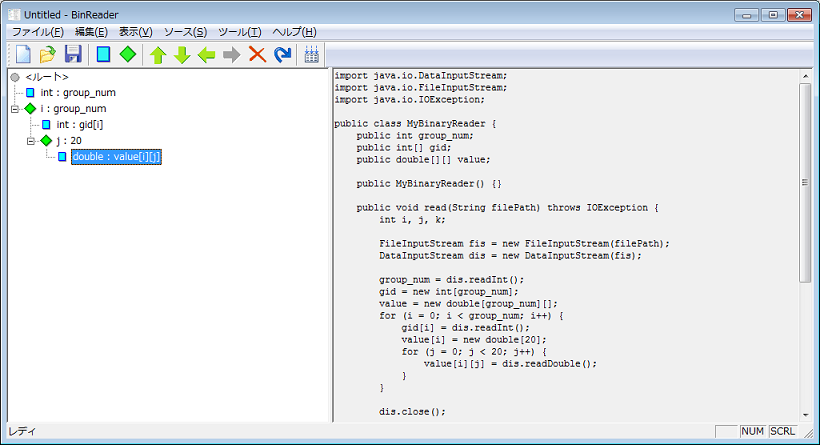
8. データ "int flag" の追加
- データ "double : value[i][j]" が選択状態のまま をクリックするか、"double : value[i][j]" 上で右クリックして[データを追加]を選択します。
[データの追加]ダイアログが表示されます。
- [型]リストから、intを選択します。
- [変数名]ボックスに、flagと入力します。
- [OK]ボタンをクリックします。
すると、変数はループ "j : 20" 配下に登録されてしまうので、ループの外に出す必要があります。
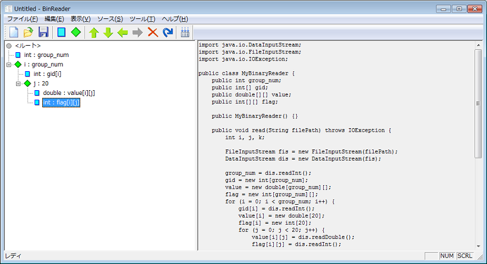
- データ "int : flag[i][j]" が選択状態のまま をクリックするか、"int : flag[i][j]" 上で右クリックして[左へ]を選択します。
すると、変数は一つ上の階層に移動しますが、まだループ "i : group_num" 配下ですので、さらにループの外に出す必要があります。
- データ "int : flag[i]" が選択状態のまま をクリックするか、"int : flag[i]" 上で右クリックして[左へ]を選択します。
すると、変数は一つ上の階層に移動して、完全にループの外に出ます。[ソースコードビュー]も自動更新されます。
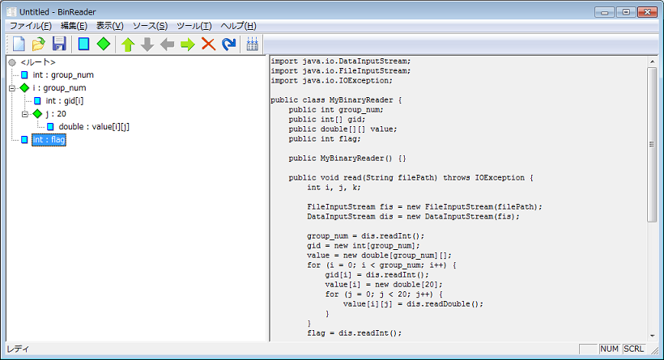
以上で、フォーマットの定義は完了です。
9. ソースコードの出力
ファイルに出力する方法
- をクリックするか、[ソース]メニューの[ソースの出力]を選択します。
[名前を付けて保存]ダイアログが表示されます。
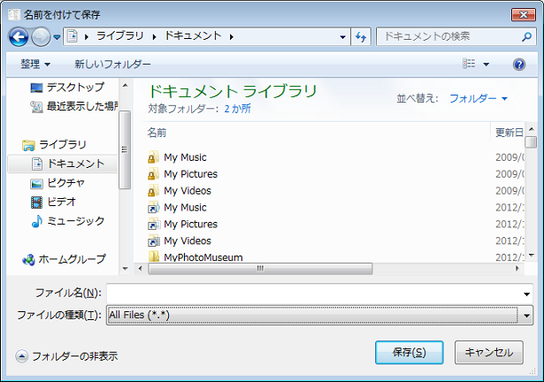
- ファイル名を指定して[保存]ボタンをクリックします。
[ソースコードビュー]の内容がそのままファイルに保存されます。
クリップボードにコピーする方法
- [ソースコードビュー]上で右クリックして、[すべて選択]を選択します。
- [ソースコードビュー]上で右クリックして、[コピー]を選択します。
[ソースコードビュー]の内容がそのままクリップボードにコピーされます。
注意
試用版では本機能はご利用になれません。
10. 設定の保存
- をクリックするか、[ファイル]メニューの[上書き保存]または[名前を付けて保存]を選択します。
[名前を付けて保存]ダイアログが表示されます。
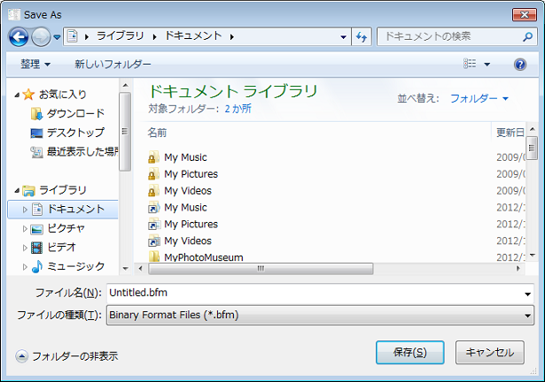
- ファイル名を入力して[保存]ボタンをクリックします。
定義したフォーマットが指定したファイルに保存されます。
補足
保存した設定を再度取り込むには、[ファイル]メニューの[開く]を選択してファイルを開きます。
注意
試用版では本機能はご利用になれません。